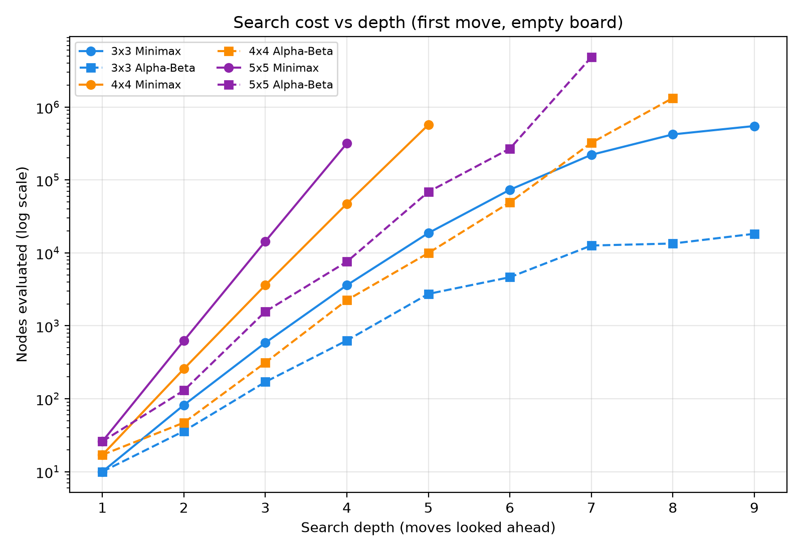
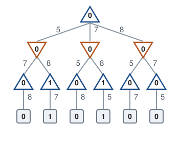
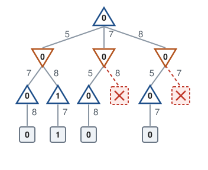
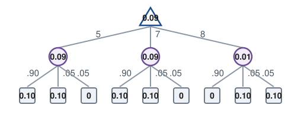
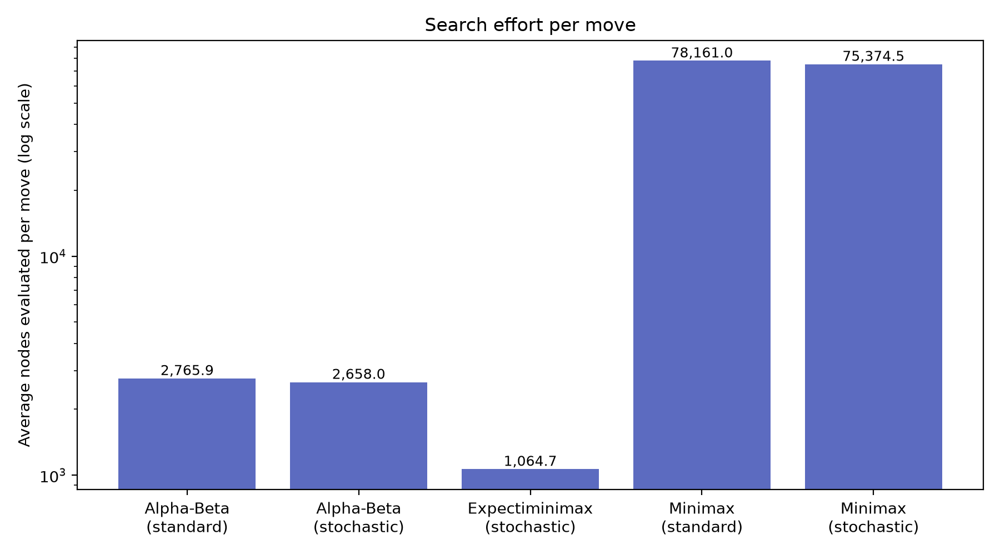
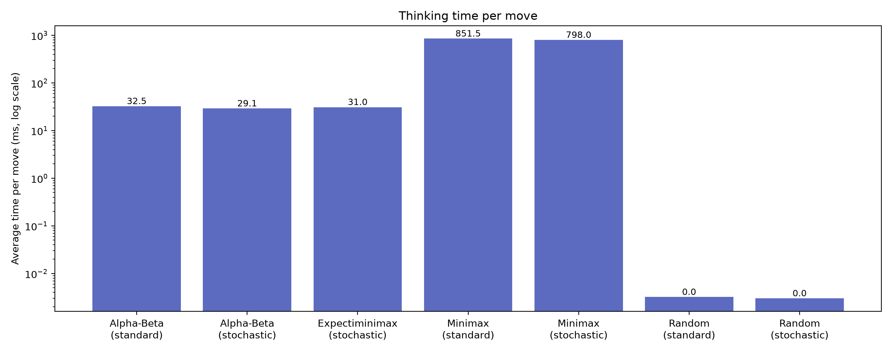
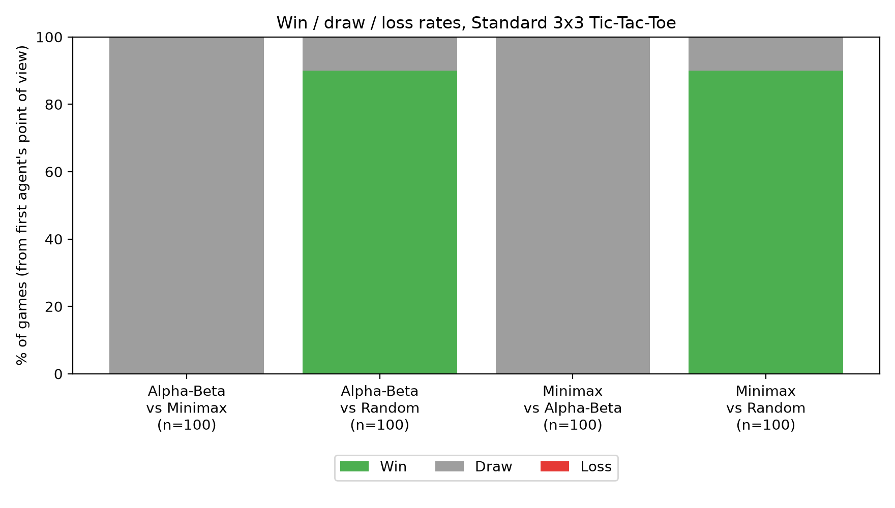
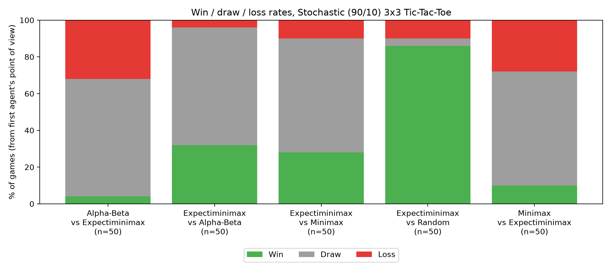

Minimax, Alpha-Beta Pruning, Expectiminimax and a Gemini LLM agent playing Tic-Tac-Toe
CP468 – Artificial Intelligence · Group 1
Michelle Adom · Marie Couto · Robert Glennie · Ethan Mongeon · Devon Rempel
Project Overview
Two-player, turn-based environment with AI-vs-AI and Human-vs-AI modes.
Standard game: 3×3 Tic-Tac-Toe, deterministic.
Stochastic variant: the chosen square is used with p = 0.90; otherwise the mark lands on a random other empty square.
Agents: Minimax, Alpha-Beta, Expectiminimax, Gemini, Random baseline.
Metrics: nodes, time, win/draw/loss rate.
Algorithms
Minimax – exhaustive recursion; MAX takes the highest value, MIN the lowest. Utility: win +1, draw 0, loss −1. Worst case O(nm).
Alpha-Beta – same result as Minimax, but passes bounds α (best for MAX) and β (best for MIN) down the tree and skips a branch when α ≥ β. Best case about O(nm/2).
Expectiminimax – adds chance nodes that average the child values by probability: E = Σ pi · V(si). A state cache keeps the full 3×3 search practical.
Scalability: 3×3 → 4×4 → 5×5

Depth-limited search from the empty board, scored by a line-counting heuristic. Alpha-Beta needs 71–98% fewer nodes than Minimax at equal depth. On 5×5 at depth 4: 318k vs 7.6k nodes (3.1 s vs 0.09 s).
Board
Depth
Minimax
Alpha-Beta
3×3
9 (full)
549,946
18,297
4×4
5
571,457
9,968
5×5
4
318,026
7,578
Within the time limit, Alpha-Beta searched 3 plies deeper than Minimax on larger boards: depth 8 on 4×4 (1.3M nodes, 17.7 s) and depth 7 on 5×5 (4.8M nodes, 66 s).
Game Tree: Minimax

XOXO5X78O
Start position (X to move; empty squares numbered). All 16 nodes visited; root value 0 (draw). Edge labels = square played.
▲ MAX▼ MIN■ terminal
Minimax vs Alpha-Beta on the 3×3 Board
Board state
Algorithm
Nodes
Median time
Utility
Empty
Minimax
549,946
1,019.7 ms
0
Alpha-Beta
18,297
40.2 ms
0
Mid-game
Minimax
182
0.352 ms
+1
Alpha-Beta
97
0.220 ms
+1
Late game
Minimax
8
0.016 ms
+1
Alpha-Beta
8
0.017 ms
+1
96.7%fewer nodes (empty board)
25×faster (empty board)
4,237cutoffs, 6,930 moves skipped
Game Tree: Alpha-Beta Pruning

XOXO5X78O
Same start position, same root value (0), with 12 nodes instead of 16: 2 branches pruned (red, dashed) because α ≥ β.
Game Tree: Expectiminimax

XOXO5X78O
Same start position. MAX → ● chance node → outcomes. A move lands as chosen with p = .90, else on another empty square (.05 each). Leaves show the exact value of the rest of the game.
Results: Search Effort and Win Rates

Nodes per move (log scale)

Time per move (log scale)

Standard game

Stochastic game
Minimax and Alpha-Beta each won 90 / 100 vs Random (10 draws, 0 losses); Minimax vs Alpha-Beta: 100 / 100 draws.
Per game, Alpha-Beta needed ~28× fewer nodes and ~25× less time than Minimax for identical results.
Stochastic game (50 games each): Expectiminimax beat Random 43 / 50, Minimax 14 / 50 (31 draws, 5 losses) and Alpha-Beta 16 / 50 (32 draws, 2 losses).
Gemini LLM Agent Results
Gemini 3 Flash chooses a move from a JSON prompt (board, mark, legal squares). 20 games per opponent, alternating X/O. An illegal move forfeits the game.
Opponent
Thinking
W / D / L
Forfeits
Random
minimal
12 / 0 / 8
4
low
20 / 0 / 0
0
Alpha-Beta
minimal
0 / 0 / 20
10
low
0 / 20 / 0
0
Expectiminimax (stochastic)
minimal
0 / 2 / 18
7
low
4 / 14 / 2
0
More thinking time removed every illegal move (21 forfeits → 0) at about 5 s per move instead of 1 s. Against perfect play (Alpha-Beta) Gemini held a draw in all 20 games.
Key Findings
Pruning pays off where the tree is big. Alpha-Beta matches Minimax's decisions with ~97% fewer nodes from the empty board, and gives little near the end of the game.
Gemini plays well only with room to think. With low thinking it never forfeited and matched Alpha-Beta's draw; with minimal thinking it lost all 20 games to it.
Chance changes the best play. Expectiminimax, which models the 10% slip, outscored Minimax and Alpha-Beta in the stochastic game.
Scalability: Minimax cost grows about ×20 per extra ply on 5×5. Alpha-Beta cuts it 71–98% at equal depth, which is what makes 4×4 and 5×5 searchable.